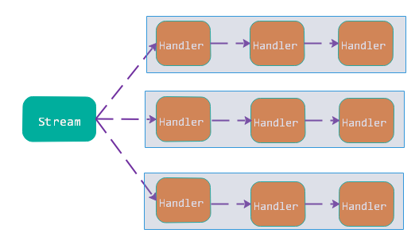
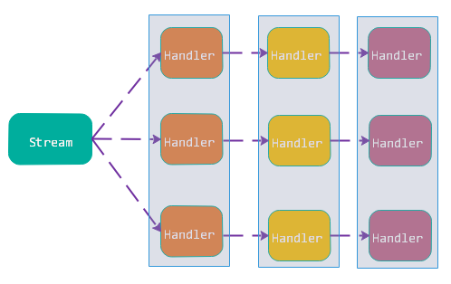
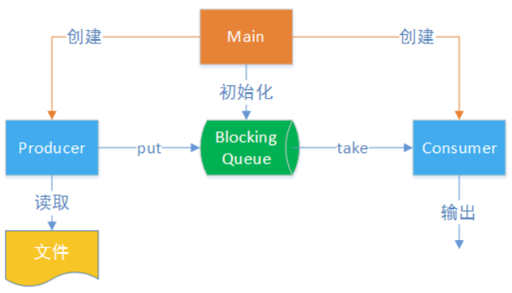
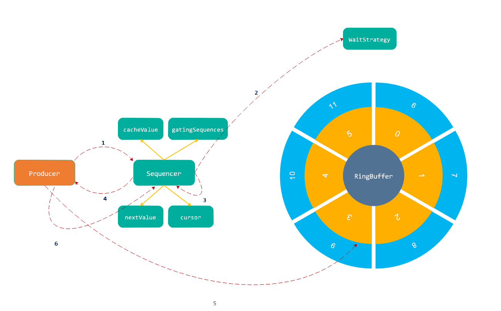
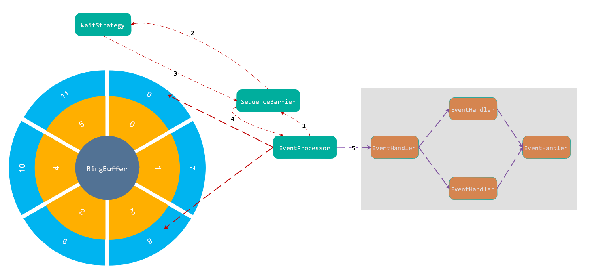

Diruptor
概述
“多核危机”驱动了并发编程的复兴，然后并发编程和一般的系统相比，复杂性有个很大梯度的上升。多线程开发很大困难在于：多个线程间存在依赖关系时，如何进行协调。依赖一方面是执行顺序的依赖，如某个线程执行需要依赖其他线程执行或其它线程的某些阶段执行结果，Java为我们提供的解决方案是：wait/notify、lock/condition、join、yield、Semaphore、CountDownLatch、CyclicBarrier以及JDK7新增的一个Phaser等；数据依赖主要是多个线程对同一资源并发修改导致的数据状态不一致问题，Java中主要依靠Lock和CAS两种方案，也就是我们熟知的悲观锁、乐观锁。
然而，当你在并发编程方面慢慢有些经验并开始在项目中使用时，你会发现仅仅依赖JDK提供的上面所说开发工具类是远远不够的， JDK提供的工具类都只能解决一个个功能“点”的问题。并发编程复杂性一个体现就是：多个顺序执行流在多核CPU中同时并行执行与我们已经习惯的单个数据顺序流执行的方式产生了很大的冲突。
好比：现在你开车从A地到B地去，传统的开发模式就像从A地到B地之间只存在一条公路，你只需要延着这个公路一直开下去就可以达到B地；假如经过多年发展，现在A地到B地横起有10条公路，纵起有10条公路，它们之间相互交叉形成错综复杂的公路网，你再开车从A地到B地就会存在太多的选择，可能从东南西北任何方向出发最终都能到达B地。这就体现了并发编程和传统编程复杂性的对比：传统编程由于只存在一个顺序执行流，可以很好的预判程序的执行流程；而并发编程存在太多的顺序执行流导致很难准确的预判出它们真正的执行流程，一旦出现问题也很难排查，就好比上面的例子第二种情况，你很难预判你开车的真正路线，而且可能存在每次路线都不一样情况。
我认为一个并发编程项目好坏其中一个关键核心就是：项目的整体结构是否清晰。很简单的一个例子，调用notify()方法唤醒挂起在指定对象上的休眠线程，如果没有一个清晰简单的架构设计，可能会导致在该对象上进行休眠的对象散落到系统中各处代码上，很难把控具体唤醒的是哪个线程从而与你的业务逻辑发生偏差导致bug的出现。当然，项目结构清晰在传统编程中也是非常看重的，只有结构清晰的架构才会让人易于理解，同时和他人沟通探讨时方便描述，但是在并发编程中这点尤为重要，因为并发编程的复杂性更高，没有一个清晰的结构设计，你可能经过大量测试修改暂时做出了一个看似没有bug的项目，但是后期需求变更或者是其他人来维护这个项目时，很难下手导致后期会引入大量的bug，而且不利于项目功能的扩展。
常用的并发编程使用的模型有并行模型、流水线模型、生产者/消费者模型、Actor模型等，采用模型设计一方面是因为这些模型都是大牛们经过长时间实际生产经验的积累总结出的并发编程方面一些好的解决方案；另一方面，采用模型设计可以解决相关人员之间沟通信息不对等问题，降低沟通学习成本。
并行模型是JDK8中Stream所采用的实现并发编程的方式，并行模型非常简单，就是为每个任务分配一个线程直到该任务执行结束，示意图如下：

并行模型太过简单导致对任务的精细化控制不足，一个任务可能会被分解为多个阶段，而每个阶段的子任务特性可能差别很大，这时并行模型就无能为力了。并行模型只适合于CPU密集型且任务中不含IO阻塞等情况的任务。这时，就演进出流水线模型，示意图如下：

流水线模型在实际的并发编程中使用比较常见，我们所说的Pipeline设计模型、Netty框架等都是这一思想的体现。
生产者/消费者模型在并发编程中也是使用频度非常高的一个模型，生产者/消费者模型可以很容易地将生产和消费进行解耦，优化系统整体结构，并且由于存在缓冲区，可以缓解两端性能不匹配的问题。
Actor模型其典型代表就是Akka，基于Akka可以轻松实现一个分布式异步数据处理集群系统，非常强大，后期我们有机会可以再深入讨论下Akka。
好了，说了这么多，终于要开始正题：Disruptor，官方宣传基于该框架构建的系统单线程可以支撑每秒处理600万订单，此框架真乃惊为天人。Disruptor在生产者/消费者模型上获得尽量高的吞吐量和尽量低的延迟，其目标就是在性能优化方面做到极致。国内国外都存在大量的知名项目在广泛使用，比如我们所熟知的strom底层就依赖Disruptor的实现，其在并发、缓存区、生产者/消费者模型、事务处理等方面都存在一些性能优秀的方案，因此是非常值得深入研究的。
生产者/消费者模型
生产者/消费者模型在编程中使用频度非常高的一个模型，生产者/消费者模型可以很容易地将生产和消费进行解耦，优化系统整体结构，并且由于存在缓冲区，可以缓解两端性能不匹配的问题。生产者/消费者和我们所熟悉的设计模式中的观察者模型很相似，生产者类似于被观察者，消费者类似于观察者，被观察者的任何变动都以事件的方式通知到观察者；同理，生产者生产的数据都要传递给消费者最终都要被消费者处理。
一般项目开发中，我们可以使用JDK提供的阻塞队列BlockingQueue很简单的实现一个生产者/消费者模型，其中生产者线程负责提交需求，消费者线程负责处理任务，二者之间通过共享内存缓冲区进行通信。

BlockingQueue实现类主要有两个：ArrayBlockingQueue和LinkedBlockingQueue，底层实现一个是基于数组的，一个是基于链表的，这种实现方式的差异导致了它们使用场景的不一样。在生产者/消费者模型中的缓存设计上肯定优先使用ArrayBlockingQueue，但是查看ArrayBlockingQueue底层源码会发现，读写操作通过重入锁实现同步，而且读写操作使用的是同一把锁，并没有实现读写锁分离；另外，锁本身的成本还是比较高的，锁容易导致线程上下文频繁的发生切换，了解CPU核存储硬件架构的可能会知道，每核CPU都会存在一个独享的高速缓存L1，假如线程切换到其它CPU上执行会导致之前CPU高速缓存L1中的数据不能再被使用，降低了高速缓存使用效率。因此，在高并发场景下，性能不是很优越。
1 | //向Queue中写入数据 |
Disruptor消息生产模型

Producer生产出一个消息事件Event，需要放入到RingBuffer中，流程大致如下：
1、首先调用Sequencer.next()方法，获取RingBuffer上可用的序号用于将新生成的消息事件放入；
2、Sequencer首先对nextValue+1代表当前需要申请的RingBuffer序号(nextValue标记了之前已经申请过的序号,nextValue+1就是下一个可申请的序号)，但是nextValue+1指向的RingBuffer槽位存放的消息可能并没有被消费，如果直接返回这个序号给生产者，就会导致生产一方将该槽位的消息事件重新填充覆盖导致之前数据丢失，这里就需要一个判断：判断申请的RingBuffer序号代表的槽位之前的消息事件是否已被消费，判断逻辑如下：
1 | public long next(int n) |
3、申请到可用序号后，提取RingBuffer中该序号中的Event，并重置Event状态为当前最新事件状态
4、重置完成后，调用Sequencer.publish()提交序号，提交序号主要就是修改cursor值，cursor标记已经生产完成序号，这样消费线程就可以来消费事件了
1 |
|
总结：消息事件生产主要包含三个步骤：
1、申请序号：表示从RingBuffer上获取可用的资源
2、填充事件：表示获取到RingBuffer上可用资源后，将新事件放入到该资源对应的槽位上
3、提交序号：表示第二部新事件放入到RingBuffer槽位全部完成，提交序号可供消费线程开始消费
Disruptor消息处理模型

消息处理端需要从RingBuffer中提取可用的消息事件，并注入到用户的业务逻辑中进行处理，流程大致如下：
1、消费端核心类是EventProcessor，它实现了Runnable接口，Disruptor在启动的时候会将所有注册上来的EventProcessor提交到线程池中执行，因此，一个EventProcessor可以看着一个独立的线程流用于处理RingBuffer上的数据
2、EventProcessor通过调用SequenceBarrier.waitFor()方法获取可用消息事件的序号，其实SequenceBarrier内部还是调用WaitStrategy.waitFor()方法，WaitStrategy等待策略主要封装如果获取消息时没有可用消息时如何处理的逻辑信息，是自旋、休眠、直接返回等，不同场景需要使用不同策略才能实现最佳的性能
1 | ProcessingSequenceBarrier： |
3、通过waitFor()返回的是一批可用消息的序号，比如申请消费7好槽位，waitFor()返回的可能是8表示从6到8这一批数据都已生产完毕可以进行消费
4、EventProcessor按照顺序从RingBuffer中取出消息事件，然后调用EventHandler.onEvent()触发用户的业务逻辑进行消息处理
1 | while (true) |
5、当这批次的消息处理完成后，继续重复上面操作调用waitFor()继续获取可用的消息序号，周而复始